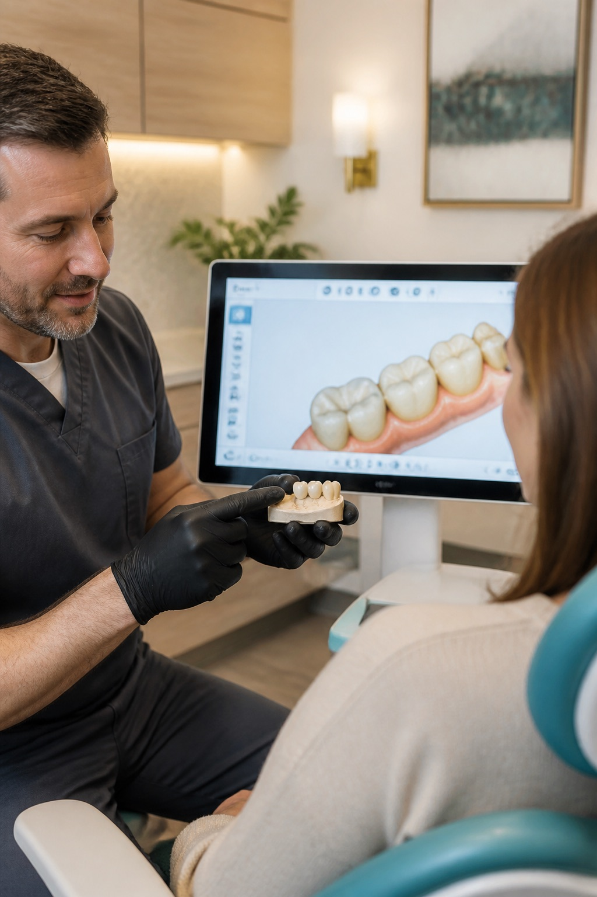

Preventive Dentistry
Routine care designed to maintain dental health and catch issues early.
- Cleanings and exams
- Sealants
- Home-care guidance
- Nightguards when recommended

Explore the core services offered at Hamilton Square Dental, from preventive visits and cosmetic improvements to restorative treatment, implants, periodontal care, and extractions.

Routine care designed to maintain dental health and catch issues early.
Options that support a brighter, more natural-looking smile while respecting function.
Care for broken, worn, missing, or infected teeth.
Tooth replacement options for missing teeth and added stability for some denture patients.
Treatment focused on gum health and restorability.
When a tooth cannot be predictably restored, removal may be recommended.
Use the divider on each example to compare the before image with the finished result. Photos are included for visual context; every treatment plan is based on an individual exam.
Tooth-colored material can restore form while blending more naturally with the smile.
A brighter shade can refresh the overall appearance of the smile.
Veneers can help refine visible teeth when shape, color, or proportion are part of the concern.
Restorative treatment can rebuild damaged teeth and replace missing teeth when appropriate.
Implant treatment can support replacement teeth and improve stability in selected cases.
Technology helps you see what Dr. Tsai sees, understand the reason for a recommendation, and move through care with more confidence.

Digital imaging supports diagnosis while making it easier to review findings with you during the visit.